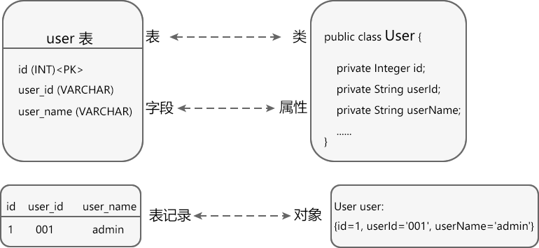

ORM是什么
ORM 是 Object Relational Mapping 的缩写，译为“对象关系映射”，它解决了对象和关系型数据库之间的数据交互问题。
使用面向对象编程时，数据很多时候都存储在对象里面，具体来说是存储在对象的各个属性（也称成员变量）中。例如有一个 User 类，它的 id、username、password、email 属性都可以用来记录用户信息。当我们需要把对象中的数据存储到数据库时，按照传统思路，就得手动编写 SQL 语句，将对象的属性值提取到 SQL 语句中，然后再调用相关方法执行 SQL 语句。
而有了 ORM 技术以后，只要提前配置好对象和数据库之间的映射关系，ORM 就可以自动生成 SQL 语句，并将对象中的数据自动存储到数据库中，整个过程不需要人工干预。在 Java 中，ORM 一般使用 XML 或者注解来配置对象和数据库之间的映射关系。
图1：ORM 图标
和自动生成 SQL 语句相比，手动编写 SQL 语句的缺点是非常明显的，主要体现在以下两个方面：
ORM 的出现，恰好解决了这些难题。
面向对象编程和关系型数据库都是广泛使用的两种技术，ORM 使得两者之间的数据交互变得自动化，解放了程序员的双手，同时也让源代码中不再出现 SQL 语句。
需要说明的是，ORM 是一种双向数据交互技术，它不仅可以将对象中的数据存储到数据库中，也可以反过来将数据库中的数据提取到对象中。
下表说明了关系型数据库和对象之间的对应关系：
例如，现在有一张 user 表，它包含 id、user_id 和 user_name 三个字段，另外还有一个 Java User 类，它包含 id、userId 和 userName 三个属性，下图演示了它们之间的对应关系：
你看，数据表和类用来描述数据的表现形式，它们之间是相互对应的；记录和对象用来真正地存储数据，它们之间也是相互对应的。
使用面向对象编程时，数据很多时候都存储在对象里面，具体来说是存储在对象的各个属性（也称成员变量）中。例如有一个 User 类，它的 id、username、password、email 属性都可以用来记录用户信息。当我们需要把对象中的数据存储到数据库时，按照传统思路，就得手动编写 SQL 语句，将对象的属性值提取到 SQL 语句中，然后再调用相关方法执行 SQL 语句。
而有了 ORM 技术以后，只要提前配置好对象和数据库之间的映射关系，ORM 就可以自动生成 SQL 语句，并将对象中的数据自动存储到数据库中，整个过程不需要人工干预。在 Java 中，ORM 一般使用 XML 或者注解来配置对象和数据库之间的映射关系。
图1：ORM 图标
和自动生成 SQL 语句相比，手动编写 SQL 语句的缺点是非常明显的，主要体现在以下两个方面：
- 对象的属性名和数据表的字段名往往不一致，我们在编写 SQL 语句时需要非常小心，要逐一核对属性名和字段名，确保它们不会出错，而且彼此之间要一一对应。
- 此外，当 SQL 语句出错时，数据库的提示信息往往也不精准，这给排错带来了不小的困难。
ORM 的出现，恰好解决了这些难题。
面向对象编程和关系型数据库都是广泛使用的两种技术，ORM 使得两者之间的数据交互变得自动化，解放了程序员的双手，同时也让源代码中不再出现 SQL 语句。
需要说明的是，ORM 是一种双向数据交互技术，它不仅可以将对象中的数据存储到数据库中，也可以反过来将数据库中的数据提取到对象中。
下表说明了关系型数据库和对象之间的对应关系：
| 数据库 | 类/对象 |
|---|---|
| 表（table） | 类（class） |
| 表中的记录（record，也称行） | 对象（object） |
| 表中的字段（field，也称列） | 对象中的属性（attribute） |
例如，现在有一张 user 表，它包含 id、user_id 和 user_name 三个字段，另外还有一个 Java User 类，它包含 id、userId 和 userName 三个属性，下图演示了它们之间的对应关系：

图2：user 表和 User 类之间的对应关系
图2：user 表和 User 类之间的对应关系
你看，数据表和类用来描述数据的表现形式，它们之间是相互对应的；记录和对象用来真正地存储数据，它们之间也是相互对应的。
ORM 的缺点
ORM 在提高开发效率的同时，也带来了以下几个缺点：- ORM 增加了大家的学习成本，为了使用 ORM 技术，您至少需要掌握一种 ORM 框架。
- 自送生成 SQL 语句会消耗计算资源，这势必会对程序性能造成一定的影响。
- 对于复杂的数据库操作，ORM 通常难以处理，即使能处理，自动生成的 SQL 语句在性能方面也不如手写的原生 SQL。
- 生成 SQL 语句的过程是自动进行的，不能人工干预，这使得开发人员无法定制一些特殊的 SQL 语句。
ORM 框架
ORM 技术通常使用单独的框架，或者框架的某个模块来实现，下面列出了常用的 ORM 框架：- 常用的 Java ORM 框架有 Hibernate 和 Mybatis。
- 常用的 Python ORM 实现有 SQLAlchemy 框架、Peewee 框架、Django 框架的 ORM 模块等。
- 常用的 PHP ORM 实现有 Laravel 框架、Yii 框架的 ORM 模块、ThinkPHP 框架的 ORM 模块等。
总结
ORM 是一种自动生成 SQL 语句的技术，它实现了对象和关系型数据库之间的数据交互，提高了开发效率。在实际开发中，常见的增删改查（CRUD）操作都可以交给 ORM，避免了手写 SQL 语句的麻烦。关注公众号「站长严长生」，在手机上阅读所有教程，随时随地都能学习。内含一款搜索神器，免费下载全网书籍和视频。

微信扫码关注公众号